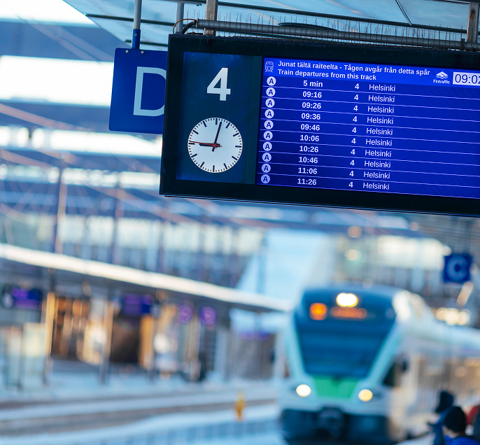

Suomen kansallinen yhteyspiste
Kansallinen yhteyspiste (National Access Point, NAP) on EU-asetuksen mukainen palvelu, joka kokoaa yhteen Suomen liikenteen tietoaineistot. NAP tarjoaa pääsyn liikkumispalveluiden ja liikenteen tietoihin yhdestä paikasta. Kansallinen yhteyspiste (eng. National Access Point, NAP), on palvelu, johon tienpitäjien ja erilaisten palveluntarjoajien on EU-sääntelyn mukaisesti toimitettava tiedot tuottamistaan tieliikenteen liikenneinfrastruktuuria, tieliikennettä, liikkumispalveluja ja vaihtoehtoisten polttoaineiden jakeluverkostoja koskevista tiedoista. Kansallisten yhteyspisteiden tavoitteena on mahdollistaa liikennetietojen sujuva jakaminen ja hyödyntäminen erilaisissa digitaalisissa liikenteen ohjaus- ja informaatiopalveluissa, kuten navigointipalveluissa.
- Liikkumispalvelukatalogi (finap.fi)
- Liikennedatakatalogi (catalog.digitraffic.fi)
Vuoden 2026 aikana nämä kaksi yhteyspistettä sulautuvat yhteen.
Liikkumispalvelukatalogi
(finap.fi)Liikkumispalvelukatalogi on kansallinen yhteyspiste liikkumispalveluiden tiedoille. Liikkumispalvelujen tuottajat toimittavat katalogiin palveluidensa olennaiset tiedot, kuten kuvaukset palveluista, reitit, aikataulut, hinnat ja varaus- ja myyntirajapintansa
Siirry LiikkumispalvelukatalogiinLiikennedatakatalogi
(catalog.digitraffic.fi)Liikennedatakatalogi on kansallinen yhteyspiste liikennedatalle. Tienpitäjät ja erilaiset palveluntarjoajat toimittavat katalogiin tietoja tie- ja katuverkon infrastruktuurista, säännöistä ja rajoituksista, liikenneverkon käytöstä ja tilasta sekä vaihtoehtoisten polttoaineiden jakeluverkosta.
Siirry LiikennedatakatalogiinMiksi palvelut yhdistyvät?
Yhteinen eurooppalainen liikennealue edellyttää avointa ja yhteisiin standardeihin pohjautuvaa liikennetiedon ekosysteemiä. Kansalliset yhteyspisteet ovat EU:n ITS-sääntelyn määrittelemä keskeinen elementti tämän toteuttamisessa.
Suomessa 1.1.2026 voimaan tulleen lainsäädännön mukaisesti kansallisen yhteyspisteen operointi keskitetään Fintrafficille. Nykyinen kahden yhteyspisteen malli on syntynyt osin hallinnollisten rakenteiden, osin teknisten reunaehtojen lopputuloksena. Palveluiden yhdistyessä syntyy yhteinen koti kaikelle Suomen liikennedatalle, mikä helpottaa sekä datan tuottajien että datan hyödyntäjien työtä. Yksi kansallinen yhteyspiste tarjoaa harmonisoidut tiedot tarjolla olevan datan tuottajista, saatavuudesta, kattavuudesta, käyttöehdoista ja laadusta.

Miten yhdistäminen etenee?
Yhdistäminen tapahtuu vaiheittain vuosien 2026–2027 aikana. Siirtymävaiheen ajan molemmat palvelut toimivat normaalisti. Tiedotamme muutoksista ja mahdollisista toimenpiteistä hyvissä ajoin.
1. Yhteinen NAP-etusivu
Suomen kansalliset yhteyspisteet löytyvät nyt osoitteesta finap.fi
2. Rinnakkaiskäyttö
Tietoja ylläpidetään vielä vuoden 2026 ajan soveltuvin osin molemmissa katalogeissa.
3. Yksi NAP
Liikkumispalvelukatalogin tiedot siirretään osaksi Liikennedatakatalogia ja Liikkumispalvelukatalogi suljetaan.